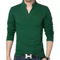

Baju Kaos Kerah Pria Shirt Lengan Panjang Casual
Kaos Lengan Panjang Pria Gaya Korea variasi kancing, kaos Dengan model kerah tinggi yang simple, dengan variasi kancing, basic, namun tetap fashion sangat cocok dan keren dipakai untuk santai dan hangout bersama teman. Terbuat dari bahan baby tery polos, bahan halus dan nyaman di pakai.